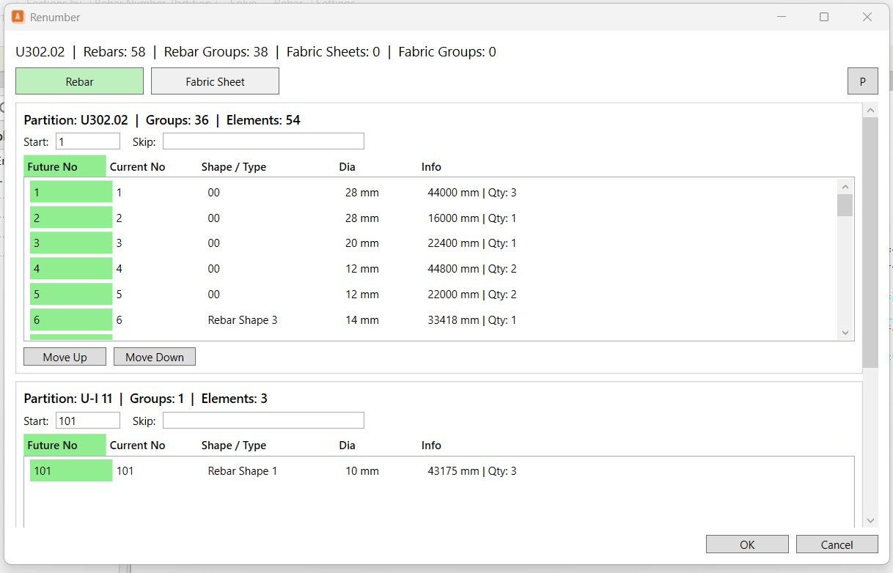
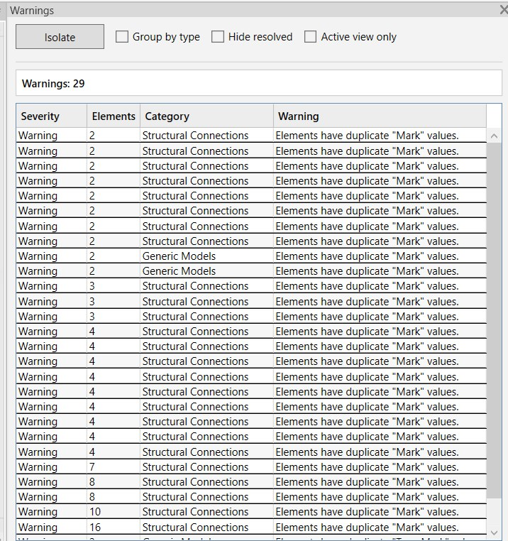
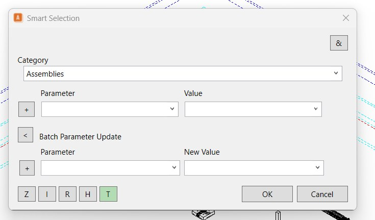

AssemblyBaugruppen
Create and edit Revit assemblies with a controlled workflow.Revit-Baugruppen in einem kontrollierten Ablauf erstellen und bearbeiten.
AniBIM FT brings focused selection, assembly, reinforcement, documentation and QA workflows directly into Autodesk Revit.AniBIM FT bringt fokussierte Auswahl-, Baugruppen-, Bewehrungs-, Dokumentations- und QA-Workflows direkt in Autodesk Revit.



Every command is designed to remove repetitive work and keep teams focused on the model.Jeder Befehl reduziert Wiederholungen und hält Teams im Modellfluss.
Create and edit Revit assemblies with a controlled workflow.Revit-Baugruppen in einem kontrollierten Ablauf erstellen und bearbeiten.
Build reliable rule-based selections and work with model content faster.Zuverlässige regelbasierte Auswahlen erstellen und schneller mit Modellinhalten arbeiten.
Renumber, partition and document reinforcement for production.Bewehrung für die Produktion neu nummerieren, partitionieren und dokumentieren.
Find warnings and reinforcement clashes before they become issues.Warnungen und Bewehrungskollisionen erkennen, bevor sie zu Problemen werden.
Rule Selection, Invert, Browser and Category tools turn repetitive clicking into a repeatable process.Regelauswahl, Umkehren, Browser und Kategorien machen aus wiederholtem Klicken einen reproduzierbaren Ablauf.

Renumber, partition, mesh cut plans and shape details keep reinforcement workflows organised and consistent.Neunummerierung, Partitionierung, Mattenzuschnittpläne und Formdetails sorgen für organisierte und konsistente Bewehrungsabläufe.
Find each command in the same panel order used inside Revit.Finden Sie jeden Befehl in derselben Bereichsreihenfolge wie in Revit.
Request installer access and a machine-bound trial licence.Fordern Sie Installer-Zugriff und eine maschinengebundene Testlizenz an.